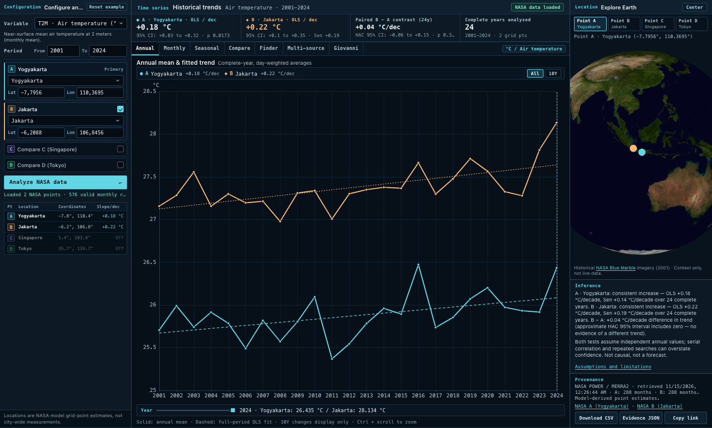
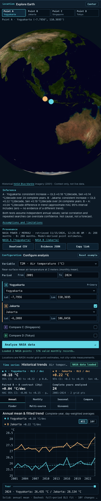
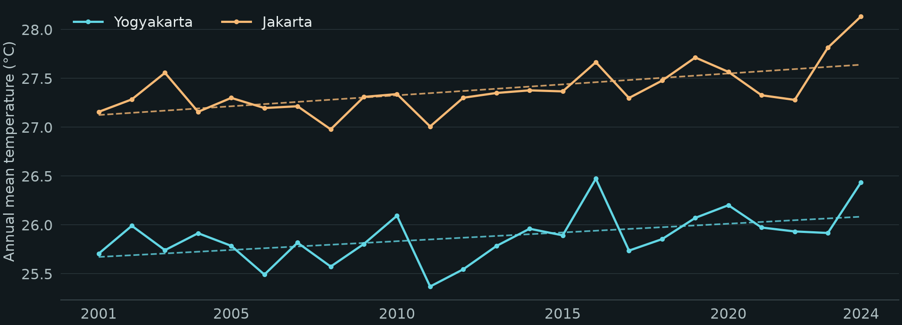

Step 01 · Ingest & Sanitize
Strict Sentinel Filtering
Strip NASA fill codes (−999, −9999, −999999999999), synthetic month 13, and out-of-window rows. Never interpolate or zero-fill missing months.
Turning raw NASA satellite & reanalysis series into reproducible statistical tests with explicit spatial support and uncertainty bounds.
Did two Java model grid cells—Yogyakarta (−7.7956°, 110.3695°) and Jakarta (−6.2088°, 106.8456°)—warm over 2001–2024 in NASA POWER monthly 2 m air temperature (T2M), and is Jakarta’s warming rate statistically distinguishable from Yogyakarta’s on shared calendar years?
p < 0.05 does not test whether Point B warmed faster than Point A.0.5° × 0.625° reanalysis grid cell as a city-wide thermometer, an irregular SWOT satellite pass as a continuous river gauge, or a global anomaly index as a local baseline leads to false conclusions.−7.7956°N, 110.3695°E · Southern central Java · 288 valid monthly NASA POWER T2M records (2001–2024).
−6.2088°N, 106.8456°E · Northwest coastal Java · 288 valid monthly NASA POWER T2M records (2001–2024).
A zero-backend-database scientific workspace that pairs NASA Giovanni (official challenge resource) and NASA POWER live point queries with SWOT RiverSP and NASA GISS GISTEMP v4 snapshots. Every chart is backed by day-weighted complete-year aggregation, parametric + rank-based trend estimators, paired Newey–West HAC difference testing, and one-click JSON/CSV provenance export.
Every series passes through identical validation, calendar-day weighting, and compatibility checks before any trend is drawn.
Strip NASA fill codes (−999, −9999, −999999999999), synthetic month 13, and out-of-window rows. Never interpolate or zero-fill missing months.
Require all 12 calendar months per year. Weight each month by exact days (28/29/30/31; 365 vs. 366 in leap years). Require n ≥ 10 complete years for trend inference.
Compute classical OLS slope, Student-t 95% CI (df = n − 2), and two-sided p alongside non-parametric Theil–Sen median pairwise slope and Mann–Kendall tie-corrected Z.
When comparing compatible series on shared complete years, form d_t = y_{B,t} − y_{A,t} and estimate Bartlett kernel HAC standard errors (L = clamp(floor(4(n/100)^(2/9)), 1, 6)).
| NASA Source / Product | Challenge Resource Role & Access | Spatial Support | Temporal Support Analyzed | Allowed vs. Refused Comparisons |
|---|---|---|---|---|
NASA Giovanni (GES DISC)M2TMNXSLV v5.12.4 & M2SMNXEDI v2 |
Official Challenge Resource Bundled regional area-average CSV/NetCDF + tutorial CSV + user CSV import (Series G) |
Regional bounding-box area average (110°E–111°E, 8°S–7°S; 6 grid cells) or point CSV |
288 months · 24 complete years (2001–2024) in K; 44 JJA seasons (1980–2023) for HWF |
Analyzed on its own Kelvin axis or anomaly σ view; refuses paired B−A slope test against POWER point series |
NASA POWER API v2.9.0T2M, T2M_MAX, T2M_MIN, T2MDEW, RH2M, QV2M, WS2M, PS, PRECTOTCORR |
Live Browser Query Direct CORS API + Cloudflare Pages Function proxy fallback |
Single model grid cell (MERRA-2 0.5° × 0.625° / GEOS-FPIT) |
Monthly means/extrema (1981–2025); headline study uses 2001–2024 (288 months, 24 complete years) | Allows paired contrast B − A only when both series share identical variable, unit, and grid-point support |
| NASA SWOT L2 RiverSP vD via PO.DAAC Hydrocron API |
Audited Static Snapshot SWORD reach 74267300251 (Ohio River near Louisville) |
1D river reach vector (~10 km segment) | 12 irregular satellite overpasses (Mar–May 2025) with reach_q quality flags |
Juxtaposed on separate vertical axis against monthly POWER rain; refuses correlation p-value (n = 3 < 6) |
NASA GISS GISTEMP v4GLB.Ts+dSST Global Index |
Dated Official Table Excerpt Checked-in NASA table (2001–2024) + live POWER re-verification |
Global land-ocean area-weighted anomaly index | 288 monthly anomalies (2001–2024), rebased to 2001–2020 calendar-month normals | Visualizes rebased local vs. global trajectories; refuses formal point-vs-global difference hypothesis test |
A single-screen scientific workbench with 7 synchronized views, interactive 3D Blue Marble coordinate picking, and auditable exports.
Choose from 9 allowlisted NASA POWER variables and up to 4 simultaneous coordinates (presets or custom lat/lon via keyboard or 3D globe).
Switch between complete-year means, raw monthly series, deseasonalized monthly anomalies, and per-calendar-month OLS trends (12 parallel fits).
Inspect side-by-side OLS and Theil–Sen 95% intervals, residual lag-1 autocorrelation flags (|r₁| > 1.96/√n), and paired B − A HAC contrasts.
Run bounded 8-point Indonesian scans, query NASA CMR collections/variables, or import a NASA Giovanni CSV (hashed locally with Web Crypto SHA-256).
Download raw monthly observations, annual means, test statistics, and source URLs in terra-lens-auditable-evidence.json.

1440×900) after live NASA POWER T2M fetch for Point A Yogyakarta (+0.18 °C/dec) and Point B Jakarta (+0.22 °C/dec).
390×844), zero horizontal overflow.Regional MERRA-2 area-averaged temperature in NASA Giovanni and both NASA POWER grid points show positive 24-year warming trends.
+0.179141 °C/dec · 95% CI: +0.0348 to +0.3235 · p = 0.01732 · R² = 0.231+0.1409 °C/dec (95% CI +0.0332 to +0.3118) · MK p = 0.02400 · Mean 25.88 °C · Residual r₁ = −0.066
+0.223835 °C/dec · 95% CI: +0.0962 to +0.3515 · p = 0.001455 · R² = 0.376+0.1926 °C/dec (95% CI +0.0789 to +0.3194) · MK p = 0.00097 · Mean 27.38 °C · Residual r₁ = +0.144
110°E–111°E, 8°S–7°S · Effective Grid Centres 110.0°E–110.625°E): +0.177 K / decadeAnalyzing the preserved NASA Giovanni monthly area-averaged 2 m air temperature export (288/288 valid months, 24 complete years, 2001–2024) yields an annual OLS slope of +0.177171 K/decade (classical 95% CI +0.042313 to +0.312030 K/decade; two-sided p = 0.012376; 2001 mean 298.071 K, 2024 mean 298.805 K). Because this series is a 6-cell regional area average in kelvin, Terra-Lens keeps it distinct from the single-cell Yogyakarta POWER point series (+0.179141 °C/decade).
For both Yogyakarta and Jakarta, classical OLS and rank-based Mann–Kendall / Theil–Sen agree on a positive direction with p < 0.05, and neither series exceeds the residual lag-1 autocorrelation warning threshold (±1.96/√24 = ±0.400). However, individual significance does not answer whether Jakarta warmed faster than Yogyakarta—that requires Slide 5’s paired test.

T2M (2001–2024, n = 24 complete years): Day-weighted annual means (solid lines) and full-period OLS fits (dashed lines) for Point A Yogyakarta (cobalt, 2001 mean 25.706 °C → 2024 mean 26.435 °C) and Point B Jakarta (terracotta, 2001 mean 27.152 °C → 2024 mean 28.134 °C).
Testing the annual difference series d_t = T2M_{Jakarta,t} − T2M_{Yogyakarta,t} directly shows no statistically distinguishable warming rate.

°C/decade): Yogyakarta’s interval (+0.0348 to +0.3235) and Jakarta’s interval (+0.0962 to +0.3515) overlap substantially. To test whether their slopes differ on shared calendar years, Terra-Lens regresses the paired annual difference series d_t = B_t − A_t over 2001–2024 (n = 24, 0 unmatched years).
+0.044694 °C/dec−0.0723 to +0.1617 °C/dec (p = 0.4366)
−0.057416 to +0.146803 °C/dec0.004924 °C/yr (0.049236 °C/dec) · Durbin–Watson 2.21
A naive dashboard might rank Jakarta (+0.224 °C/dec) above Yogyakarta (+0.179 °C/dec) and claim coastal Jakarta is warming 25% faster. Terra-Lens’s paired contrast proves that the +0.0447 °C/decade gap has a 95% HAC confidence interval of −0.0574 to +0.1468 °C/decade (p = 0.3739)—spanning zero. The data support warming at both grid points, but do not establish a statistically significant difference in warming rates between them.
In the Trend Contrast Finder tab, screening 8 pre-declared Indonesian coordinates (28 candidate pairs) surfaces extreme-pair contrasts (e.g., Medan +0.291 °C/dec vs. Surabaya +0.140 °C/dec). Terra-Lens explicitly labels post-selected pairs as exploratory hypothesis generation because selecting extremes after viewing 8 series invalidates confirmatory p-values without multiple-testing correction.
Combining datasets across missions requires respecting physical units, irregular sampling, quality flags, and reprocessing boundaries.
Pairs 12 irregular SWOT satellite pass water-surface elevations (WSE) on SWORD reach 74267300251 with overlapping monthly NASA POWER precipitation (PRECTOTCORR at 38.2527°N, 85.7585°W). Plotted on separate vertical panels so pass heights (m above geoid) are never conflated with monthly rain rates (mm/day).
Rebases both Yogyakarta POWER T2M and NASA GISS global land-ocean anomalies to a shared 2001–2020 monthly normal (2001–2024), alongside NASA’s published Giovanni MERRA-2 summer heatwave frequency (HWF, 1980–2023) tutorial table.
0.5° × 0.625° model grid cells, not urban station networks or population exposure.M2TMNXSLV v5.12.4 export contains no quality-flag variable and does not list individual monthly input-granule filenames. NASA reprocessed Sep 2020 and Jun–Sep 2021 as MERRA2_401 (correcting a near-surface warm bias); byte-preserved NASA Hyrax OPeNDAP .dap.nc4 subsets for all 5 reprocessed months match the preserved Giovanni 6-cell values bit-for-bit in IEEE 754 float32 (0.0 K max difference), though the Giovanni aggregate file itself does not embed native GranuleID strings.n = 24), and post-selected Finder pairs or 12-month seasonal scans are exploratory without multiple-testing correction.SHA-256) for auditability, but a static web app cannot cryptographically certify that a user-uploaded file was unaltered after leaving NASA servers.Every number on Slides 1–6 and in the live web app can be independently recomputed from preserved primary NASA files in under 60 seconds.
npm run check — Syntax check, 81/81 Node unit/integration tests, and production bundle build.python3 scripts/verify-scipy.py — Independent Python + SciPy recomputation of NASA POWER annual means, OLS, Mann–Kendall / Theil–Sen, and paired Newey–West HAC vs. JS engine.python3 scripts/verify-giovanni-area.py & verify-giovanni-grid.py — Verifies Giovanni CSV/NetCDF checksums (ff7cd37f... / d9a320f7...), 6-cell area mean, and +0.177171 K/dec slope.node tests/browser.smoke.mjs & node tests/demo.responsive.mjs — Headless Chromium E2E, axe-core WCAG 2.1 AA audit, and 7-slide responsive/print overflow verification.M2TMNXSLV), GES DISC, doi:10.5067/AP1B0BA5PD2K; Collow et al. (2024), MERRA-2 Extreme Detection Indices V2 (M2SMNXEDI), doi:10.5067/O8AX56DO60MI.SWOT_L2_HR_RiverSP_D), reach 74267300251.AI Assistance: Generative AI coding assistants were used for software scaffolding, UI layout refinement, test harness authoring, and editorial formatting. All scientific data come directly from official NASA files/APIs; every statistical formula was deterministically implemented and independently verified with Python/SciPy.
Eligibility Note: Technical verification confirms repository/deployment integrity and preserved NASA Giovanni artifacts; official challenge-resource eligibility and final submission status are determined solely by NASA and Local Event judges.